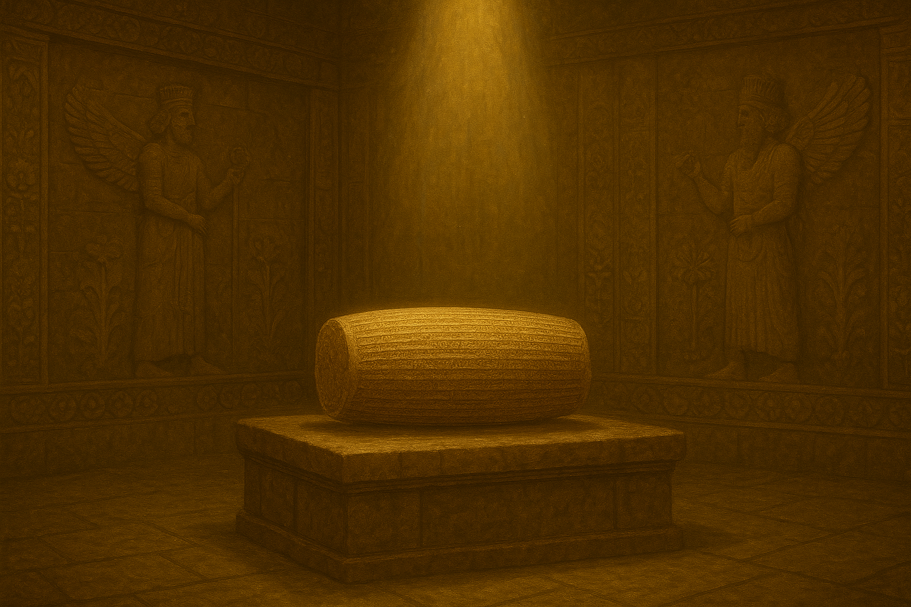
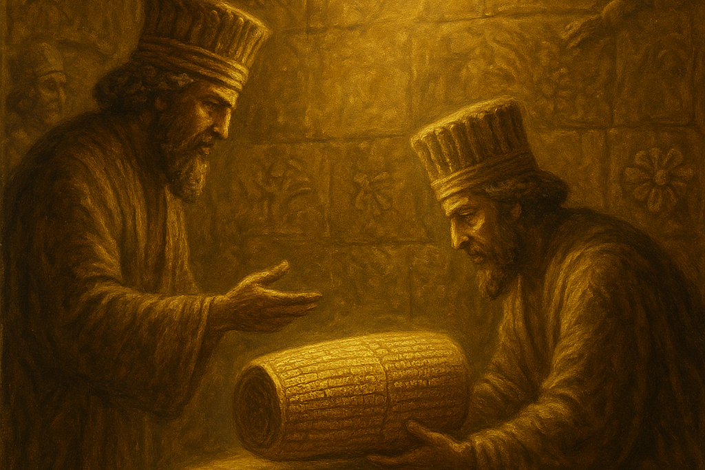
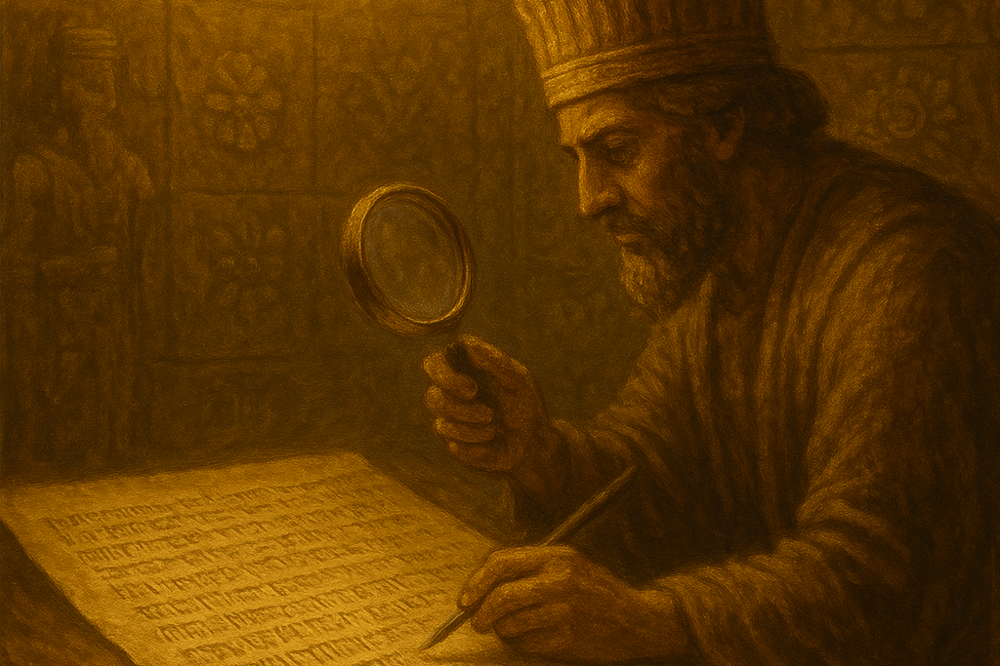
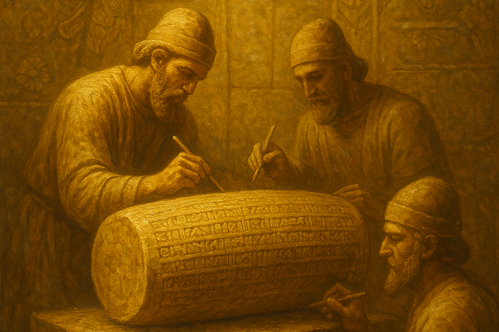
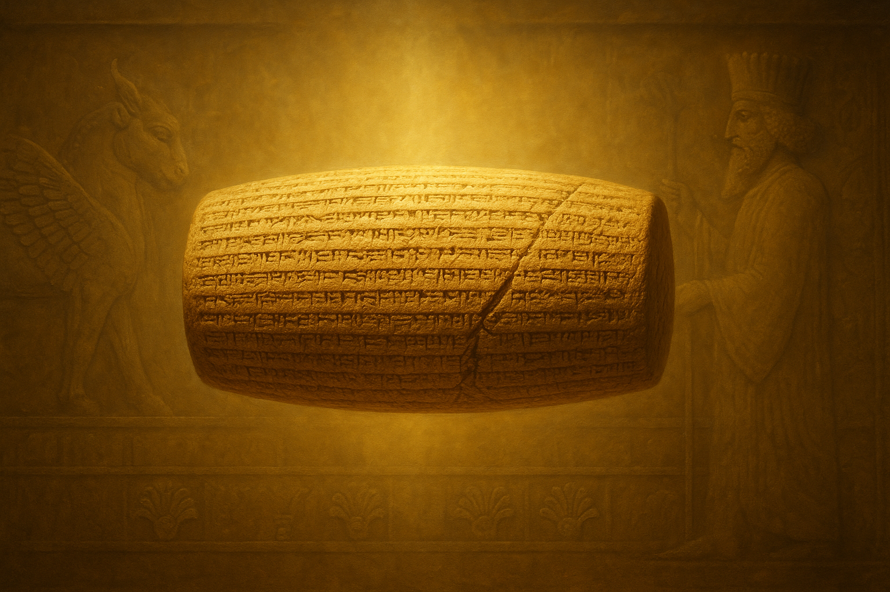
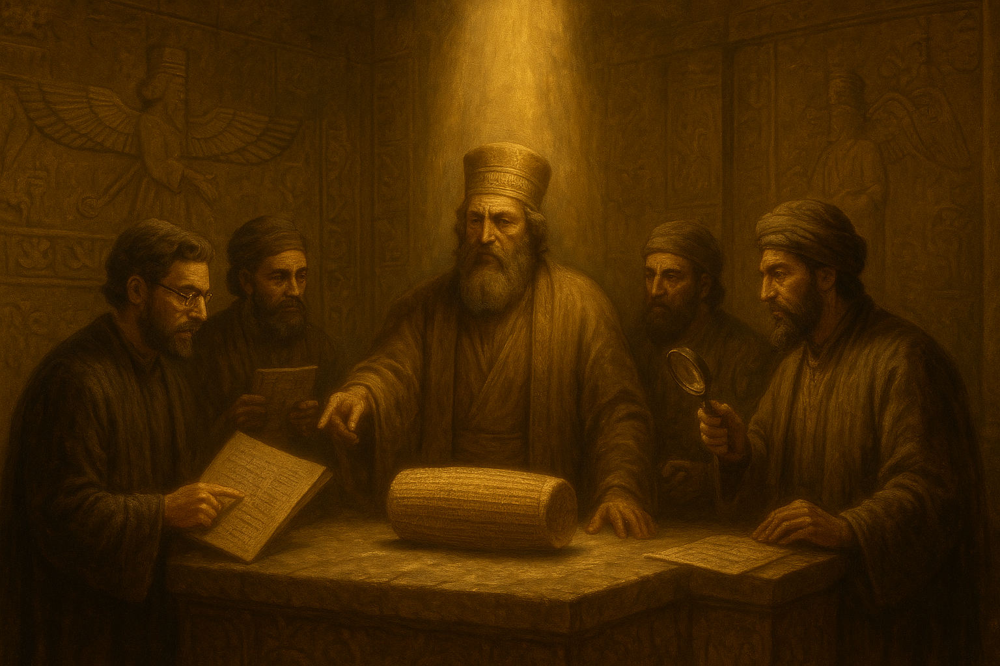
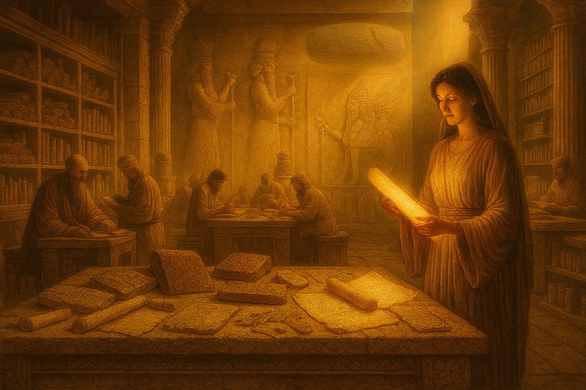

منشور چیست؟ منشور کوروش یکی از مهمترین اسناد تاریخی جهان است که نشاندهنده سیاستهای عدالتمحور و احترام به آزادی ملتها در دوران هخامنشیان است. این سند به صورت کتیبهای بر لوحی از سنگ یا گل نوشته شده و از نظر تاریخی اهمیت بسیاری دارد. زمان و مکان یافت شدن منشور در سال ۱۸۷۹ میلادی در شهر بابل، عراق کنونی کشف شد. این کشف توسط باستانشناسان و محققان اروپایی انجام شد و از آن زمان مورد مطالعه قرار گرفته است. جنس، شکل و اندازهٔ واقعی منشور اصلی از گل رس ساخته شده و به شکل یک لوح مستطیل است. ابعاد آن تقریباً ۲۲ × ۱۹ سانتیمتر است و روی آن خطوط میخی به زبان اکدی حک شده است. نویسنده و زبان نگارش متن منشور به زبان اکدی و به خط میخی نوشته شده است. نویسنده آن یک مامور رسمی دولت هخامنشی بوده که دستورات کوروش را بهصورت رسمی ثبت کرده است.

آزادی ملتها کوروش در منشور خود تأکید میکند که ملتها حق دارند به شیوه زندگی، آیین و سنت خود ادامه دهند و هیچ قومی تحت فشار یا زور قرار نگیرد. لغو بردهداری و اسارت یکی از مهمترین دستورات منشور، آزادی کسانی است که تحت اسارت قرار گرفته بودند و بردهداری در قلمرو تحت فرمان کوروش محدود و کنترل شد. احترام به ادیان و معابد کوروش به بازسازی معابد و احترام به اعتقادات مذهبی مردم اهمیت ویژهای داده و این موضوع در منشور بارها ذکر شده است. بازسازی شهرها بازسازی شهرهای آسیبدیده و بازگرداندن مردم به سرزمینهایشان، بخشی از برنامههای کوروش بود که منشور آن را ثبت کرده است. سیاستهای عدالتمحور کوروش این منشور نمونهای از حکومتداری عادلانه در تاریخ باستان است که توجه به حقوق ملتها و رعایت عدالت اجتماعی را نشان میدهد.

چرا منشور کوروش مهم است؟ منشور کوروش به عنوان قدیمیترین سند حقوق بشر در تاریخ شناخته میشود و نمادی از آزادی و مدارا در دوران باستان است. نقش آن در تاریخ حقوق بشر این منشور الهامبخش اندیشمندان و فعالان حقوق بشر در قرون بعدی بوده و نمونهای از احترام به حقوق انسانی در دورهای که حکومتها معمولاً قدرت مطلق داشتند، به شمار میرود. مقایسه با دیگر اسناد همدوره در مقایسه با اسناد اداری و کتیبههای دیگر امپراتوریهای باستان، منشور کوروش تمرکز ویژهای بر حقوق ملتها و آزادی ادیان دارد و این وجه تمایز آن است.

چه کسی آن را کشف کرد منشور کوروش در سال ۱۸۷۹ توسط باستانشناس بریتانیایی، هری اسمیت، در بابل کشف شد. چه کسانی آن را ترجمه کردند محققان متعددی از جمله ژرژ گریفیتس و ریچارد پوت ترجمههای اولیه منشور را انجام دادند و بعدها پژوهشهای دقیقتری روی آن صورت گرفت. تاریخچه انتقال و نگهداری پس از کشف، منشور به لندن منتقل شد و در نهایت در موزه بریتانیا نگهداری شد. نسخههای کپی آن در ایران و برخی موزههای دیگر نیز به نمایش گذاشته شدهاند.

موزه بریتانیا منشور اصلی در موزه بریتانیا نگهداری میشود و قابل بازدید عمومی است. نسخههای کپی چندین نسخه کپی از منشور در ایران و دیگر کشورها به نمایش گذاشته شده تا پژوهشگران و علاقهمندان بتوانند از آن بهرهمند شوند.

دیدگاههای موافق بسیاری از پژوهشگران منشور را نمونهای اولیه از حقوق بشر میدانند و آن را بینظیر در تاریخ باستان میدانند. دیدگاههای پژوهشی انتقادی برخی پژوهشگران معتقدند منشور بیشتر یک سند سیاسی-اداری است که برای تثبیت قدرت و مشروعیت حکومت کوروش صادر شده و اهداف حقوق بشری آن جنبه تبلیغاتی دارد. اختلاف نظر تاریخنگاران بین تاریخنگاران درباره تفسیر منشور و میزان واقعی آزادیهایی که کوروش اعمال کرده اختلاف نظر وجود دارد، اما همه بر اهمیت تاریخی آن توافق دارند.

ارجاعات سازمان ملل سازمان ملل متحد منشور کوروش را به عنوان یکی از نخستین اسناد حقوق بشر جهان مورد توجه قرار داده و از آن در آموزش و پژوهشهای حقوق بشری یاد میکند. تأثیر فرهنگی در ایران منشور کوروش در ایران به عنوان نماد عدالت و آزادی، الهامبخش فرهنگ، ادبیات و سیاستهای اجتماعی است. بازتاب در رسانهها، کتابها و هنر این منشور در کتابها، فیلمها، آثار هنری و آموزش تاریخ ایران و جهان به کرات مورد ارجاع قرار گرفته است و توجه جهانیان را به شخصیت کوروش جلب کرده است.